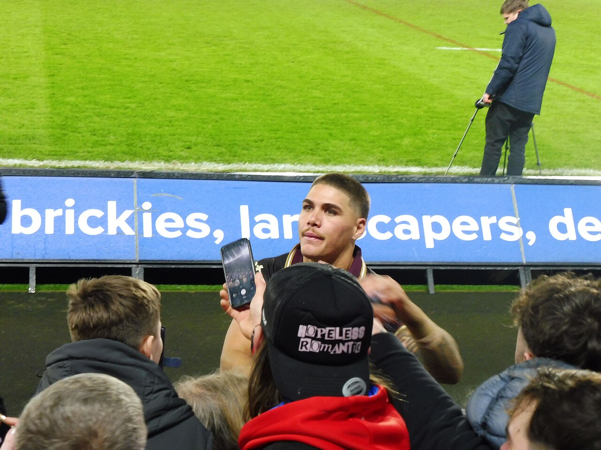
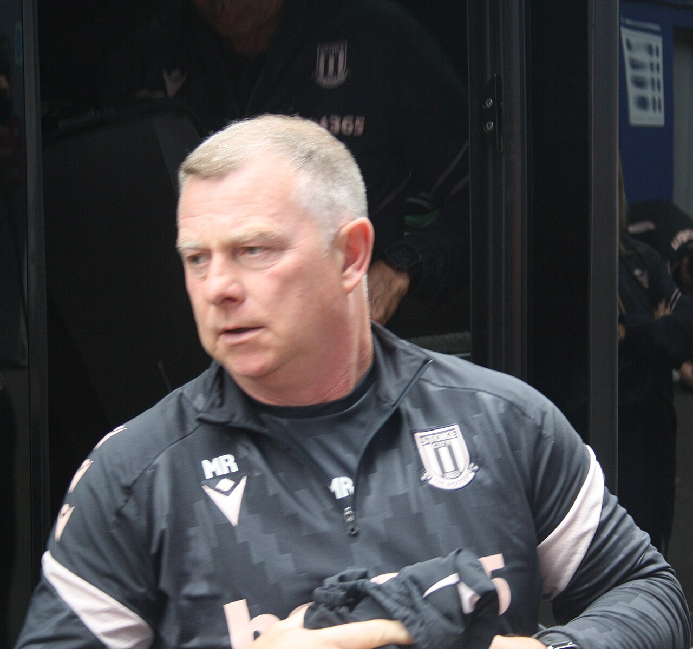

Brisbane Broncos
NRL 2026 · Men finished 14th · NRLW runners-up · Seven Broncos at the World Cup
Photo: Hullian111 / Wikimedia Commons source · Creative Commons Attribution-ShareAlike 4.0 International (CC BY-SA 4.0) · Resized; no crop.

Latest Broncos result — the NRLW grand final
Lost by 24 · Sun 4 Oct · Accor Stadium, Sydney · NRLW Grand Final · 0–26 at half-time · Crowd 47,451
NRLW finals 2026
The men's last six of 2026 — the historical record
The Suncorp ledger — the whole men's season in one table
| Split | P | W | L | Win % |
|---|---|---|---|---|
| Home fixtures (all at Suncorp) | 12 | 2 | 10 | 16.7 |
| Away fixtures | 12 | 6 | 6 | 50.0 |
| … of which, played at Suncorp | 2 | 0 | 2 | 0.0 |
| Total appearances at Suncorp | 14 | 2 | 12 | 14.3 |
Carried forward from the previous edition’s match-by-match review, because two true numbers were in circulation and looked contradictory. AAP's review coverage said Brisbane lost 12 of 14 at Suncorp; this page runs 2–10 at home. Both are right: Brisbane played two further games at Suncorp that were not home fixtures — the Warriors in Magic Round (Round 11) and the Dolphins in Round 23, which was Redcliffe's home game. They lost both. The club's own season review put it the same way as AAP — “lost 12 of 14 at Suncorp” — and made home form one of five stated priorities for 2027. On Friday, Suncorp hosted a preliminary final that Brisbane were not in and Redcliffe lost.
2026 by the numbers
The tile that belongs at the top of this list and has never been on this page: Brisbane went into 2026 as the reigning premiers. Michael Maguire won the 2025 title — only the second coach in the club's history to do it — and the following season the same club finished 14th and conceded 28.2 points a game. Every number above reads differently once that is in front of them.
Final 2026 ladder
| # | Team | Pts | +/− |
|---|---|---|---|
| 1 | Panthers · out, prelim | 42 | +336 |
| 2 | Warriors · out, semi-final | 42 | +310 |
| 3 | Dolphins · out, prelim | 40 | +156 |
| 4 | Roosters · PREMIERS | 38 | +118 |
| 5 | Sharks · out, semi-final | 34 | +149 |
| 6 | Rabbitohs | 34 | +113 |
| 7 | Knights · runners-up | 34 | +42 |
| 8 | Cowboys | 32 | −84 |
| · · · finals cut-off · · · | |||
| 9 | Sea Eagles | 28 | +99 |
| 10 | Storm | 28 | +18 |
| 11 | Raiders | 28 | −45 |
| 12 | Bulldogs | 28 | −60 |
| 13 | Eels | 24 | −181 |
| 14 | Broncos | 22 | −206 |
| 15 | Wests Tigers | 22 | −254 |
| 16 | Titans | 18 | −186 |
| 17 | Dragons | 16 | −325 |
Final ladder carried forward from the previous edition. Brisbane’s 14th place, 8–16 record and 471–677 points tally were checked against Rugby League Project; the other clubs’ full figures have not been independently re-audited in this review.
The finals — how they finished
| When (AEST) | Match | Result / Venue |
|---|---|---|
| Fri 11 Sep | Rabbitohs v Knights (EF) | Knights won 20–10 · Allianz |
| Sat 12 Sep | Warriors v Dolphins (QF) | Dolphins won 26–16 · Go Media |
| Sat 12 Sep | Sharks v Cowboys (EF) | Sharks won 26–16 · Allianz · 17,429 |
| Sun 13 Sep | Panthers v Roosters (QF) | Panthers won 19–12 · CommBank |
| Sat 19 Sep | Roosters v Sharks (SF) | Roosters won 46–10 · Allianz |
| Sun 20 Sep | Warriors v Knights (SF) | Knights won 12–10 · Eden Park |
| Fri 25 Sep | Dolphins v Roosters (PF) | Roosters won 36–20 · Suncorp · 52,286 |
| Sat 26 Sep | Roosters v Raiders (NRLW PF) | Roosters won 20–10 |
| Sun 27 Sep | Titans v Broncos (NRLW PF) | Broncos won 20–8 · Robina · 7,372 |
| Sun 27 Sep | Panthers v Knights (PF) | Knights won 22–14 · Accor · ~55,000 |
| Sun 4 Oct, 3:00pm | Roosters v Broncos (NRLW GF) | Roosters won 30–6 · Accor · 47,451 |
| Sun 4 Oct, 6:30pm | Roosters v Knights (NRL GF) | Roosters won 19–18 · Accor · 80,814 |
All times AEST; results and crowds from NRL.com's match data. The Roosters won both grand finals. The men's decider went to a Daly Cherry-Evans field goal on 69 minutes: Newcastle led 12–0 through Francis Manuleleua and Kalyn Ponga, the Roosters scored 19 unanswered, and Greg Marzhew's try and Sandon Smith's conversion on 76' left the Knights a point short. James Tedesco won the Clive Churchill Medal; ABC reports it was Cherry-Evans's final NRL game. Dane Gagai, a Bronco from 2027, was on the losing side — the day after the IRL cleared him to switch his international allegiance to New Zealand.
NRLW 2026 — how the ladder finished
| # | Team | W–L | Pts |
|---|---|---|---|
| 1 | Roosters · PREMIERS | 11–0 | 22 |
| 2 | Titans · out, prelim | 10–1 | 20 |
| 3 | Broncos · runners-up | 8–3 | 16 |
| 4 | Wests Tigers · out, week 1 | 7–4 | 14 |
| 5 | Raiders · out, prelim | 6–5 | 12 |
| 6 | Knights · out, week 1 | 5–6 | 10 |
Top six only, now taken from the NRL's own ladder. Corrected this edition: the previous two editions had Gold Coast 9–1, Brisbane 7–3 and Newcastle 5–5, and explained the gap by saying Brisbane had played ten games to the Roosters' eleven. That was wrong — every club played eleven. The official figures are Titans 10–1 (20 points), Broncos 8–3 (16) and Knights 5–6 (10), and AAP's account agrees: Brisbane lost three in a row up to a 28–20 defeat by the Titans in round 8, then won their last three and both finals. The one regular-season meeting with the Roosters was round 7, lost 34–20. Week 1 of the finals: Raiders 6 Wests Tigers 0, Broncos 40 Knights 16.
Worth knowing
- The women's season ends a game short, against the best side the competition has produced. Brisbane lost 30–6 to a Roosters team that went 13–0, and by half-time the score was 26–0. Upton, Southwell and Robinson are all still there, and so is the core of a squad that reached a fifth grand final in nine seasons. The defence of the 2025 title ended at the last step, which is a long way further than the men's defence got.
- Ali Brigginshaw has played her last game. Five-eighth in her fifth NRLW grand final at 38, after winning the first four, she finishes with a loss and a place on report for a tackle on Tarryn Aiken — not the ending anybody would write, and a long way from the measure of the career. ABC counted her, Julia Robinson and Chelsea Lenarduzzi as Brisbane's three “OGs”, at the club since 2018. Next year is the first NRLW season Brisbane will play without her. The next morning she was left out of the Jillaroos' World Cup squad, with Isabelle Kelly taking the captaincy, so the grand final looks to have been her last game.
- The Roosters also won the men's decider, 19–18, and Brisbane's new centre was on the wrong side of it. Newcastle led 12–0 after half an hour, the Roosters scored 19 straight, and a Daly Cherry-Evans field goal on 69 minutes turned out to be the margin when the Knights scored late. Dane Gagai, who joins Brisbane for 2027, played for Newcastle the day after being cleared to represent New Zealand. James Tedesco won the Clive Churchill Medal — which matters here because he is the man Reece Walsh is competing with for the Kangaroos jersey.
- Jordan Riki is the second Brisbane forward on the 1 November clock, and the club has confirmed the rule this page argued about for three editions. Riki is on a reported $500,000 and off contract at the end of 2027 — the same position as Willison. Reports of a falling-out with Maguire over training methods were denied by head of football Troy Thomson: "I haven't spoken to Jordan directly, but I'm not aware of anything that's been reported… so that's news to me", adding "he can't talk to anyone until November 1, we haven't given him permission to talk." That is the club stating the rule out loud: final twelve months, 1 November 2026. The reported motive is money rather than grievance — comparable second-rowers are signing for $850,000 to over $1m. The Warriors are linked, with Kurt Capewell expected to retire after 2027.
- Xavier Willison: two reports, five days apart, 13 days to go. On 13 October Zero Tackle, citing The Australian, reported that he had verbally agreed a roughly $4 million extension but wanted to wait until 1 November to sign, so that his new manager, Ahmad Merhi, could do the deal rather than his previous agency. On 18 October Zero Tackle reported that he is preparing to test his value on the open market, despite a Brisbane offer said to be worth up to $1 million a season. They point in different directions, and neither is an announcement. Maguire: "Yes, those things will get sorted out. … He's a big part of our plans moving forward." Willison himself: "My daughter was born in Brisbane, so I would love to stay here and bring my family up here in Brisbane."
- Two senior football appointments in a month. On 14 October the club confirmed Peter O'Sullivan as general manager of recruitment, from Newcastle, where he had been head of recruitment for 18 months and helped build a grand-final side; earlier, Jon Clarke was named head of performance from Manly. For a club that finished 14th with most of a premiership-winning roster, recruitment and fitness are the right departments to start with.
- Membership prices are up, and fans have noticed. Fans quoted by News Corp (via Zero Tackle) say their membership has gone from $250 to $395 for 2027, after a season that ended one place above the bottom three. Chief executive Dave Donaghy: "Some prices are changing as discounted offers finish or packages change, but membership remains the best value way to watch the Broncos at Suncorp Stadium," adding that a new member can get a reserved seat for all 12 home games for under $300. Twelve home games at 2–10 last year is a hard sell at any price; the club is betting on 2027 being different.
- Australia 24, New Zealand 22, and the Broncos were all over it. Thursday's opener at Allianz drew 41,255, which NRL.com called a record crowd. Reece Walsh started at fullback and ran 206 metres with nine tackle breaks, scored an 80-metre try off a Jack Bostock offload, and kicked two conversions — though one attempt hit the post and a line dropout went out on the full, costing a penalty goal. Kotoni Staggs started at centre and was sin-binned for dragging back Kodi Nikorima just before half-time. Pat Carrigan started at prop. For New Zealand, Xavier Willison came off the bench on 30 minutes and recruit Dane Gagai started at centre. The man of the match was Bostock, with a hat-trick on debut, including the winner four minutes from time. Mitchell Moses is out of the tournament with a calf injury, replaced by Ethan Strange.
- The other Broncos at the World Cup. Deine Mariner started on Samoa's wing and scored in their 78–4 rout of France; Tupou Francis came off Lebanon's bench in an 18–42 loss to PNG; Ben Talty was not in England's side that lost 12–30 to Tonga (NRL.com match centres). In the Jillaroos' 40–0 win over Samoa, Tamika Upton had three try assists and four line-break assists and Julia Robinson scored a try (NRL.com); the report does not mention Jesse Southwell.
Two players on one clock, a World Cup opener in numbers, and the road to Suncorp
NRLW: runners-up · 6–30Men's season over · 14th · 8–1613 days to 1 NovemberStep 1 — the free-agency clock, now with a second name on it and independent confirmation. This page spent three editions getting this rule right, so here is the chain and the corroboration:
v8 had 1 November 2026. v9 “corrected” it to 2027 by inverting the rule. v10/v11 restored 2026 and showed the working. This week Brisbane's own head of football said the date out loud about a different player in the identical contractual position, which is as close to settled as a fan page gets. The point of the date has also changed shape: it is not one negotiation, it is two, under two weeks out, in the same position group.
Step 2 — what 2027 actually requires. An illustrative comparison using the 2026 structure, not a confirmed 2027 schedule. The NRL pays two competition points a win plus two for each of three byes, so a season converts cleanly:
The shape has not changed and it still cuts both ways. Going from the worst home record in the competition to a merely ordinary one only reaches the edge of the eight on this year's numbers — that is how far 2026 fell. But it is five wins, not fifteen, and the away half already happened: 6–6 on the road is a mid-table team, managed with an injured fullback, a retiring halfback and a defensive brief that changed hands in July. Keeping the two forwards on the November clock is the cheapest five-wins-worth of improvement available — and the club has now spent on a head of performance as well.
Step 3 — the World Cup opener, scored from NRL.com's report.
Walsh's kicking was the one blemish on a big night: one conversion off the post, and a dropout out on the full that handed New Zealand a penalty goal — two points, in a two-point game. His running more than paid for it.
Step 4 — the road to Suncorp, on Brisbane's clock.
The honest summary. The Broncos' best news this week came in green and gold and black: four of them on the field in a 24–22 classic, Walsh producing the try of the night, and a Kangaroos game at Suncorp on Sunday. The worst news is the same as last week's, sharpened: 13 days before rival clubs can call Willison, the two most recent reports about him disagree. Brisbane lost Payne Haas from exactly this position a year ago.
Ins and outs — Broncos
Five listed arrivals for 2027, unchanged this week; not re-verified this edition. The NRL's own signings tracker, updated 25 September, lists four of them (Pezet, Barnett, Gagai, Blore) and no new Brisbane business; De Courcey and Coric are carried here from club and press reports. Destinations are not assumed when unannounced.
↘ Joining for 2027
- Mitch Barnett Confirmed
Back-rower from the Warriors, contracted through 2029. The headline forward recruit to replace Haas's minutes, if not his impact. Missed selection for Australia's World Cup squad. - Jonah Pezet Confirmed
Halfback from Parramatta through 2029 — the Reynolds succession plan, and likely to be coached by Reynolds himself. - Shawn Blore Confirmed
Back-rower from Melbourne, contracted through 2028. - Dane Gagai Confirmed
Centre from Newcastle, one year, through 2027. Played in the Knights' 19–18 grand-final loss; cleared by the IRL on 3 October to switch to New Zealand, and named in their World Cup squad. - Wilson De Courcey Confirmed
Outside back, 20, from Newcastle on a two-year deal to 2028. 14 tries in 17 NSW Cup games in 2026.
↗ Leaving
- Adam Reynolds Confirmed — retired
323 NRL games, no final and no farewell match in 2026. Joins the coaching staff in 2027, role still being defined. - Payne Haas Confirmed
To South Sydney, 2027–2029, reported at $3.6m over three years. Finger surgery; not in Samoa's World Cup squad. - Jaiyden Hunt Confirmed — new
To Canberra, two years, reported $350,000. Announced 14 September. Was on last week's "undecided" list. - Jack Gosiewski Confirmed — leaving
Contract not renewed. No destination reported. Also moved off last week's "undecided" list, halfway. - Corey Jensen Confirmed — retired
Retiring rather than moving on. - Jesse Arthars, Gehamat Shibasaki, Grant Anderson, Joshua Coric Confirmed
Arthars to Catalans Dragons, Shibasaki to the Perth Bears, Anderson to the Warriors, Coric to Hull FC on a two-year deal. - Delouise Hoeter Confirmed — retired
Farewelled as a retiring player at the club awards on 14 September. - Josh Rogers, Ben Te Kura Confirmed — departing
Both acknowledged as departing in the club’s awards announcement. Destinations not verified in this review.
Xavier Willison and Jordan Riki are on neither list, and belong in the same paragraph now. Both are contracted for 2027; neither has an early release. Both may be formally approached by rival clubs from 1 November 2026. Willison was reported on 13 October to have verbally agreed an extension, to be signed after 1 November, and on 18 October to be testing the market; he has said publicly he wants to stay. Riki, on a reported $500,000, is expected to test a market where comparable second-rowers are getting $850,000 to over $1m; the club has denied a rift with Maguire and confirmed he has not been given permission to talk. The Warriors are the club linked. Neither situation is resolved, and nothing here is a signing.
Coaching and football staff for 2027, since it is movement even if it is not players: Peter O'Sullivan in as general manager of recruitment from Newcastle (confirmed 14 October); Jon Clarke in as head of performance from Manly; Matt Ballin confirmed as defensive coach after taking the brief in July; Ben Te'o out, to Queensland; Trent Barrett stays on attack; Adam Brideson stays in development with a new hire to support him; Troy Thomson up to executive general manager of football; Dave Pallard up to general manager; Adam Reynolds joining the staff in a role still being defined.
Stoke City
EFL Championship · P11 W6 D1 L4 · 6th, 19 points
Photo: Timmy96 / Wikimedia Commons source · Public domain: Creative Commons CC0 1.0 Universal dedication · Resized; no crop.
.jpg){kind=link}
Latest result — a first goal for Graham, and three points at Derby
Won 1–0 · Sat 17 Oct · Pride Park · Championship MD11 · Crowd 28,814
Last six competitive games
Season so far — competitive
| Date | Opponent | Comp | Result | Crowd |
|---|---|---|---|---|
| 8 Aug | Oldham Athletic (H) | Carabao R1 | W 2–0 | 10,157 |
| 15 Aug | Swansea City (H) | Championship | L 1–2 | 24,332 |
| 22 Aug | Southampton (A) | Championship | L 1–3 | 29,185 |
| 25 Aug | Hull City (H) | Carabao R2 | D 1–1, lost 4–5 pens | 7,141 |
| 29 Aug | Wolves (A) | Championship | L 1–4 | 30,334 |
| 1 Sep | Norwich City (H) | Championship | W 1–0 | 20,140 |
| 5 Sep | Charlton Athletic (H) | Championship | W 4–0 | 21,071 |
| 8 Sep | Cardiff City (A) | Championship | D 1–1 | 18,088 |
| 12 Sep | Watford (A) | Championship | W 2–1 | 18,296 |
| 19 Sep | Sheffield United (H) | Championship | W 2–1 | 23,360 |
| 10 Oct | Bolton Wanderers (A) | Championship | W 2–1 | 26,018 |
| 13 Oct | Middlesbrough (H) | Championship | L 2–3 | 22,538 |
| 17 Oct | Derby County (A) | Championship | W 1–0 | 28,814 |
Twenty-one scored and seventeen conceded across thirteen competitive games. Stoke's five home league crowds average 22,288; the six away grounds visited average 25,123. The Middlesbrough score, scorers and crowd are from Sky's report and Wikipedia's season page, which agree; the Derby crowd is from Derby County's own match report; earlier lines were checked in previous editions.
Championship — after eleven games
| # | Team | P | GD | Pts |
|---|---|---|---|---|
| 1 | Swansea City | 11 | +8 | 23 |
| 2 | West Ham United | 11 | +18 | 22 |
| 3 | Middlesbrough | 11 | +6 | 22 |
| 4 | Birmingham City | 11 | +9 | 20 |
| 5 | West Bromwich Albion | 11 | +3 | 20 |
| 6 | Stoke City | 11 | +2 | 19 |
| 7 | Southampton (−4) | 11 | +11 | 17 |
| 8 | Wolves | 10 | +3 | 17 |
| Play-offs: 3rd–8th · automatic promotion: 1st–2nd | ||||
| 9 | QPR | 11 | +3 | 17 |
| 10 | Blackburn Rovers | 11 | +1 | 15 |
| 11 | Sheffield United | 11 | +1 | 15 |
| 12 | Millwall | 11 | 0 | 15 |
| 13 | Portsmouth | 10 | 0 | 14 |
| 14 | Wrexham | 11 | −1 | 14 |
| 15 | Bolton Wanderers | 11 | −3 | 14 |
| 16 | Bristol City | 11 | −3 | 14 |
| 17 | Charlton Athletic | 11 | −5 | 14 |
| 18 | Lincoln City | 11 | −10 | 12 |
| 19 | Cardiff City | 11 | +1 | 11 |
| 20 | Watford | 11 | −9 | 11 |
| 21 | Norwich City | 11 | −4 | 9 |
| Relegation: 22nd–24th | ||||
| 22 | Burnley | 11 | −5 | 8 |
| 23 | Derby County | 11 | −11 | 6 |
| 24 | Preston North End | 11 | −15 | 4 |
Rebuilt this week from last week's table plus all 24 results from matchdays 10 and 11 (Sky Sports), then reconciled against BBC Sport's published table on 19 October: every row and every position matches. Stoke are 6th, inside the 3rd–8th play-off band, three points off the automatic places and two clear of 9th. The band is tight in both directions: one point covers 4th to 6th, and three clubs sit on 17 points just below. Southampton’s four-point deduction is still applied; Wolves and Portsmouth still have a game in hand.
Next five fixtures
| Date (UK) | AEST | Opponent | H/A |
|---|---|---|---|
| Sat 24 Oct, 3:00pm | Sun 25 Oct, 12:00am | Bristol City (16th) | Home |
| Sat 31 Oct, 12:30pm GMT | Sat 31 Oct, 10:30pm | Preston North End (24th) | Home |
| Tue 3 Nov, 7:45pm GMT | Wed 4 Nov, 5:45am | Blackburn Rovers (10th) | Away |
| Sat 7 Nov, 12:30pm GMT | Sat 7 Nov, 10:30pm | Portsmouth (13th) | Away |
| Sat 21 Nov, 3:00pm GMT | Sun 22 Nov, 1:00am | Birmingham City (4th) | Home |
All five match BBC Sport’s fixture lists (checked 19 October); positions are as at 19 October. Conversions were computed with a time-zone database: BST ends at 2am on Sunday 25 October, so Bristol City is the last game at +9 hours and everything from Preston onwards is +10 — which is why two of the next five are civilised 10:30pm Saturday kick-offs in Brisbane, and Birmingham is 1:00am.
Worth knowing
- Middlesbrough showed the gap, Derby showed the resilience. On Tuesday the second-placed side won 3–2 at the bet365 in front of 22,538. Callum Brittain put Boro ahead on 48', Junior Tchamadeu's shot went in off Neto Borges two minutes later, Will Lankshear scored on 73' after Viktor Johansson spilled Amario Cozier-Duberry's shot, and substitute Róbert Boženík equalised on 85' — before Borges made up for his own goal with the winner in stoppage time. Robins: "There's a lot to be really positive about, but at the same time harsh lessons learned." Four days later Stoke won at Derby without playing well, which is its own kind of progress.
- Sam Gallagher won September's Goal of the Month for his winner against Sheffield United, according to Wikipedia's season page citing the EFL; Jack McGlynn's equaliser in the same game was also on the shortlist. Robins was nominated for Manager of the Month, which went to West Ham's Nuno Espírito Santo.
- Talovierov served his ban. Sky confirmed he was suspended for Middlesbrough, with Junior Tchamadeu and Bae Jun-ho starting in place of him and Justin Devenny. He was back on the bench at Derby.
- The Southampton swing is down to three places. On the pitch they have 21 points, which would make them 4th; with the four-point deduction they are 7th. Worked in the panel below.
Squad shape
- Luke Graham — 22, a Scotland international, and now a Stoke goalscorer: the winner at Derby. The quietest good decision of the summer is getting louder.
- Viktor Johansson — a costly spill against Middlesbrough and a match-winning save at Derby in the same week. Seven conceded in the last six league games; one clean sheet in that run.
- Ethan Galbraith — three goals in eleven league games, and the free-kick for Graham's winner.
- Róbert Boženík — one league goal from the bench against Middlesbrough, adding to two in the Carabao Cup, per Wikipedia's squad statistics.
- Lamine Cissé — started both games this week after his first goal of the season at Bolton.
- Bae Jun-ho — started against Middlesbrough and was on the bench at Derby. Six league appearances this season.
- Ben Pearson — 31, in his final contract year, and on the bench at Derby. The January watch item.
- The absent — Sam Gallagher, Aaron Cresswell and Svante Ingelsson were again missing from the matchday squad at Derby, per Derby's published line-ups; this page found no reason given for Gallagher. Wikipedia's squad statistics show no appearances this season for Cresswell or Ato Ampah.
Eleven games in — sixth, rebuilt from the results
The Championship changed for 2026/27: 3rd–8th qualify for the play-offs. Third and fourth advance to the semi-finals; fifth hosts eighth and sixth hosts seventh in eliminators. The top two still go up automatically. EFL format announcement.
Step 1 — rebuild Stoke's row from the eleven league results rather than copying the published table.
Stoke hold a play-off place with a two-point cushion. Since the 0-from-9 start, the last eight league games have produced 19 points — promotion form, over a sample still too small to bank.
These are planning benchmarks only. Neither 74 nor 50 is a guaranteed threshold.
Step 2 — Southampton's deduction, recomputed on the new table.
The swing is small this week because only three clubs sit between Southampton's raw 21 points and their published 17: Birmingham and West Brom on 20 and Stoke on 19. This number has moved between 3 and 13 places in seven weeks without the deduction itself changing at all, which is a good reason not to forecast it.
The honest version. Sixth after eleven games, from 24th after three, is a better season than anyone could have predicted in August. Middlesbrough showed that the top of this division is a level above, and Derby showed Stoke can win when they are not at their best. Bristol City at home, then Preston, are games a play-off side wins.
Ins and outs — Stoke City, window closed
Window summary carried forward; no movement since last week, when Bae Jun-ho moved from the departures to the “stayed” list because he never left. Eleven names are listed below, including a loan and Milan Smit’s loan-to-permanent arrangement; that is not the same as eleven new summer arrivals. Wikipedia’s season page puts the net summer outlay at over £30m and lists two fees this page had as undisclosed: Bombino at £3.7m and Soumaré at £3.4m. Both are added below as reported rather than confirmed, from a single source. Other fees and contract terms have not been re-verified this week.
↘ Arrivals & permanent conversions
- Justin Devenny Confirmed
Midfielder, Crystal Palace, reported £5m, four-year deal, 1–2 September. Two goals v Charlton. - Jack McGlynn Confirmed
Midfielder, Houston Dynamo, permanent, reported around $5.5m. USMNT international. Scored at Watford and against Sheffield United. - Luca Bombino Confirmed
Left-back, San Diego FC, permanent with a sell-on clause, announced 1 September. Fee reported at £3.7m by one source; the club did not disclose it. - George Hirst Confirmed
Striker, permanent from Ipswich Town, reported around £6m. First league goal on 5 September. - Ethan Galbraith Confirmed
Midfielder from Swansea City, reported £10m — the summer's biggest outlay. Three league goals. - Milan Smit, Djibril Soumaré, Luke Graham, Josh Griffiths, Svante Ingelsson Confirmed
Smit £4.75–4.8m from Go Ahead Eagles (since loaned to Darmstadt 98); Soumaré from Braga, reported £3.4m; Graham from Dundee, reported £2m though officially undisclosed, four-year deal — now a Scotland squad member; Griffiths from West Brom; Ingelsson from Sheffield Wednesday, reported £1m. - Ben Johnson Confirmed — loan
Right-back, season-long loan from Ipswich Town. Scored at Cardiff.
↗ Left
- Sorba Thomas Confirmed
To Hull City, 1 September, after a third bid. Fee undisclosed officially; one outlet reports £10.5m. - Tatsuki Seko Confirmed
Permanent exit to Urawa Red Diamonds, announced by the club on 16 August. - Steven N'Zonzi, Lewis Baker, Nikola Jojić Confirmed
N'Zonzi released — one source has him since joining USL Dunkerque; Baker to Bursaspor on a free; Jojić departed by mutual consent. - Milan Smit (loan), True Grant, Emre Tezgel, Favour Fawunmi Confirmed — loans out
Smit to Darmstadt 98; Grant to Halifax, Tezgel to Wycombe, Fawunmi to Oldham. - Ben Pearson, Maksym Talovierov, Éric Bocat Stayed
All three linked with exits; none moved. Bocat has two league goals; Pearson, in his final contract year, is the January watch item. - Bae Jun-ho Stayed — corrected
Listed on this page from 31 August to 5 October as a permanent move to Olympique Lyonnais. That move did not happen: he is still Stoke's number 10, and was on the bench at Bolton.
Harry Clarke remains off this list. The £3.5m Ipswich deal reported in early August never happened — he signed permanently for Preston North End and has played for them. Ben Brereton Díaz, who chose Sheffield United over a Stoke loan, likewise stays off. Both are noted rather than silently deleted, because a transfer list that only shows the things that came off is not a transfer list. The window closed at 11pm BST on Tuesday 1 September — not 31 August, which earlier editions of this page got wrong and which is not coming back. The next window opens in January; until then the only movement available is contract business, and the only live item is Ben Pearson’s final year.